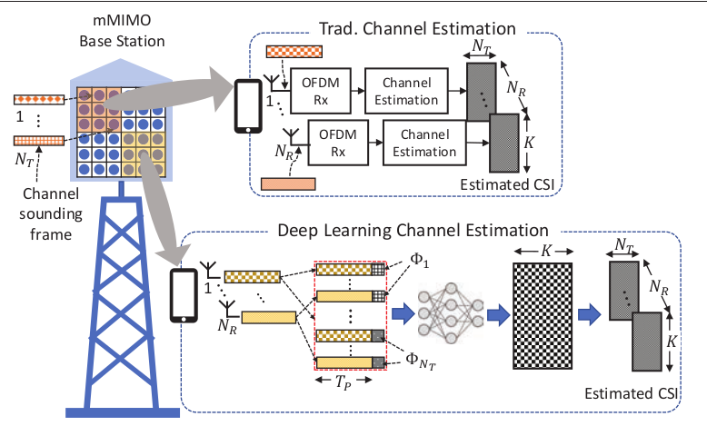
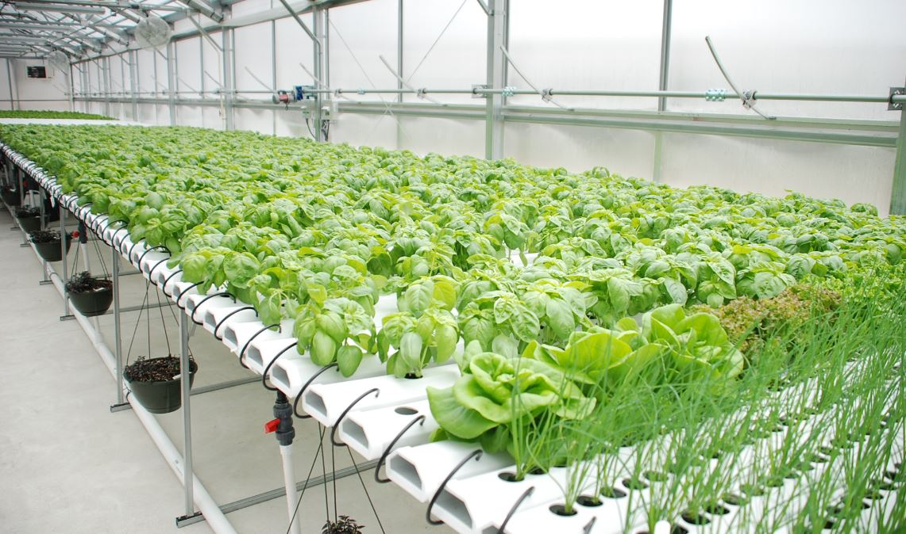
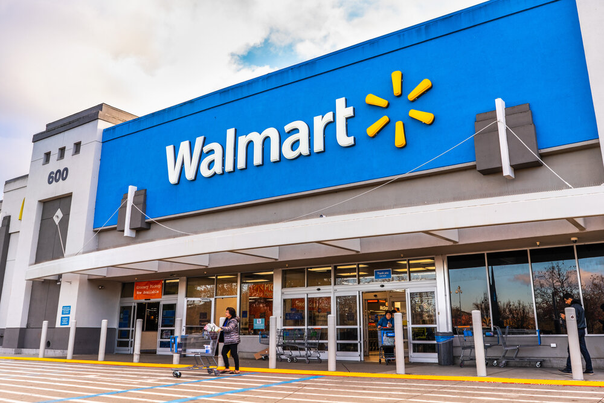
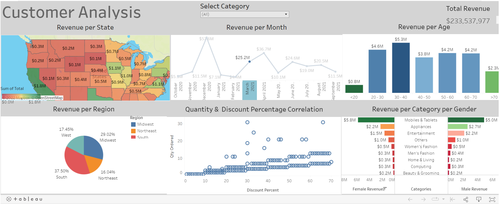

Developed sequence-based models using LSTM networks for channel estimation in vehicular communication systems. Compared the LSTM-based approach with traditional methods like Data-Pilot-Aided channel estimation followed by Temporal Averaging (DPA-TA). Implemented simulations using MATLAB and Python, achieving improved BER and NMSE performance with the LSTM model.
Researched the importance of Massive MIMO in 5G wireless networks for fast communication. Explored how deep learning can optimize antenna usage, outperforming traditional methods like LS and LMMSE in terms of BER and received signal power.


Developed a plant growth estimator for broadleaf plants grown under hydroponics, comparing traditional machine learning and CNN-based methods. Achieved state-of-the-art results with high generalization using a hybrid approach.
Analyzed World University Ranking data from 2012 to 2015 using Python, visualizing correlations between variables like quality of education, publications, scores, and citations to world rankings.
Explored global Covid-19 data using SQL Server, including querying and data cleansing processes.

Visualised global Covid-19 data using Tableau, including global death numbers, infection rates, and deaths per continent.

Analysed Walmart retail data using Tableau, visualising profit per state, profit vs. age groups, average sales, profit, and discounts.

Explored and visualised customer data using Tableau, including revenue per state, month, age, region, category by gender, and quantity by discount percentage.

Analysed Airbnb revenue data per zip code using Tableau, examining factors like the number of bedrooms, bathrooms, and location contributing to revenue generation.

Scraped data from Amazon to analyse product price data using Python.

Analyzed how different variables affect movie revenue using Python.